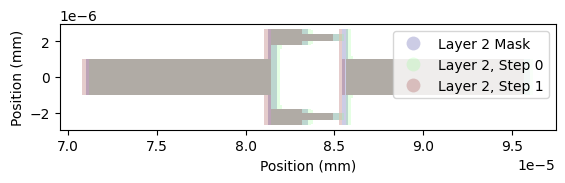

Basic Magnetostatic Simulation of a Flux Line
Qiskit Metal Design
[1]:
%reload_ext autoreload
%autoreload 2
import qiskit_metal as metal
from qiskit_metal import designs, draw
from qiskit_metal import MetalGUI, Dict, Headings
import pyEPR as epr
from qiskit_metal.qlibrary.terminations.open_to_ground import OpenToGround
from qiskit_metal.qlibrary.tlines.meandered import RouteMeander
from qiskit_metal.qlibrary.qubits.transmon_pocket import TransmonPocket
#
from SQDMetal.Comps.Xmon import Xmon
from SQDMetal.Comps.Capacitors import CapacitorGapPinStretch
from SQDMetal.Comps.Wires import WireTaperPinStretch, WirePinStretch
from SQDMetal.Comps.FluxLines import FluxLineTPin
from SQDMetal.Comps.Junctions import JunctionDolanPinStretch
design = designs.DesignPlanar({}, True)
design.chips.main.size['size_x'] = '400um'
design.chips.main.size['size_y'] = '400um'
Xmon(design, 'leXmon', options=Dict(pos_x=0, pos_y=0,
vBar_width='24um', hBar_width='24um', vBar_gap='16um', hBar_gap='16um',
cross_width='144um', cross_height='144um',
gap_up='24um', gap_left='0um', gap_right='24um'))
FluxLineTPin(design, 'flux_line_T', options=Dict(ref_comp='leXmon', ref_pin='right',
width=f'100um',
trace_width=f'8um',
trace_gap=f'12um',pin_dist='24um'))
WireTaperPinStretch(design, 'flux_ln_taper', options=Dict(pin_inputs={'start_pin': {'component': 'flux_line_T', 'pin': 'a'}},
trace_width=f'20um', trace_gap=f'28um', taper_length='50um'))
WirePinStretch(design, 'flux_ln_wire', options=Dict(pin_inputs=Dict(start_pin=Dict(component=f'flux_ln_taper',pin='a')),
dist_extend='54um', trace_width=f'20um', trace_gap=f'28um'))
CapacitorGapPinStretch(design, f'capProng', options=Dict(cpw_width=f'20um',
pin_inputs=Dict(start_pin=Dict(component=f'leXmon',pin='left')),
dist_extend='120um',
cap_width=f'50um',
cap_gap='3um',
gnd_width='1um',
len_diag='0um', len_flat=f'50um',
side_gap=f'10um', init_pad='10um'
))
############################
JunctionDolanPinStretch(design, 'junction', options=Dict(pin_inputs=Dict(start_pin=Dict(component=f'flux_line_T',pin='t')),
dist_extend='25um',
finger_width='0.4um', t_pad_size='0.385um',
squid_width='5.4um', prong_width='0.9um',
layer=2));
############################
# gui = MetalGUI(design)
# gui.rebuild()
# gui.autoscale()
The idea is to run this through a shadow-evaporated Josephson junction (notice that 'junction' is in layer 2). So let’s quickly do the PVD simulation to ensure that there is an enclosed loop:
[2]:
from SQDMetal.Utilities.PVD_Shadows import PVD_Shadows
%matplotlib inline
design.chips['main']['evaporations'] = Dict(
layer2=Dict(
bottom_layer='200nm',
top_layer='100nm',
undercut='200nm',
pvd1 = Dict(
angle_phi = '0',
angle_theta = '-45',
metal_thickness = '20nm'
),
pvd2 = Dict(
angle_phi = '0',
angle_theta = '45'
)
)
)
pvdSh = PVD_Shadows(design)
pvdSh.plot_layer(2,'separate', plot_mask=True)

We can extract the largest interior area for surface flux integration
[3]:
int_area = pvdSh.get_shadow_largest_interior_for_component('junction')[1]
int_area
[3]:
Magnetostatic Simulation
Now to run the Palace simulation (make sure to update the path to the Palace binary first)
[ ]:
from SQDMetal.PALACE.Inductance_Simulation import PALACE_Inductance_Simulation
#Eigenmode Simulation Options
user_defined_options = {
"mesh_refinement": 0, #refines mesh in PALACE - essetially divides every mesh element in half
"dielectric_material": "silicon", #choose dielectric material - 'silicon' or 'sapphire'
"solver_order": 2, #increasing solver order increases accuracy of simulation, but significantly increases sim time
"solver_tol": 1.0e-8, #error residual tolerance for iterative solver
"solver_maxits": 200, #number of solver iterations
"fillet_resolution":12, #number of vertices per quarter turn on a filleted path
"palace_dir":"~/spack/opt/spack/linux-ubuntu24.04-zen2/gcc-13.3.0/palace-develop-36rxmgzatchgymg5tcbfz3qrmkf4jnmj/bin/palace",#"PATH/TO/PALACE/BINARY",
"num_cpus": 16
}
#Create the Palace Eigenmode simulation
mag_sim = PALACE_Inductance_Simulation(name ='Test1', #name of simulation
metal_design = design, #feed in qiskit metal design
sim_parent_directory = "", #choose directory where mesh file, config file and HPC batch file will be saved
mode = 'simPC', #choose simulation mode 'HPC' or 'simPC'
meshing = 'GMSH', #choose meshing 'GMSH' or 'COMSOL'
user_options = user_defined_options, #provide options chosen above
create_files = True) #create mesh and config files
#add in metals from the first layer
mag_sim.add_metallic(1)
mag_sim.add_metallic(2, evap_mode=None)
#add ground plane into simulation
mag_sim.add_ground_plane()
#Create a lumped element port for the Josephson junction and assign Jospehson inductance and junction capacitance
# mag_sim.create_port_JosephsonJunction('Q1', L_J = 11e-9, C_J = 0e-15)
mag_sim.create_current_source_with_Uclip_on_Route('flux_ln_wire', 'end')
mag_sim.add_integration_area(int_area)
#Fine mesh the qubit and resonator - min_size/max_size is the min/max mesh element size
mag_sim.fine_mesh_components(['junction', 'flux_ln_wire', 'flux_ln_taper'], min_size=5e-6, max_size=50e-6, taper_dist_min=20e-6, metals_only=True)
# mag_sim.fine_mesh_along_path(qObjName='readout', dist_resolution=10e-6, min_size=12e-6, max_size=150e-6, taper_dist_min=10e-6)
#Prepare the simulation files - mesh file (.msh) and config file (.json)
mag_sim.prepare_simulation()
[5]:
mag_sim.open_mesh_gmsh()
[ ]:
flux_per_amp = mag_sim.run()
The returned value is the flux per Ampere. We can normalise it to flux quanta for 1mA to get a reasonable estimate of the flux-tunability:
[8]:
flux_per_amp / 2.067833848e-15 * 0.001
[8]:
array([[0.02227944]])
[ ]: